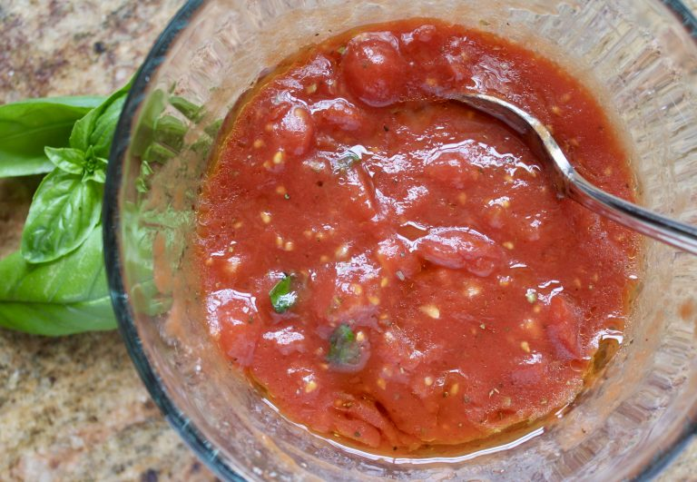
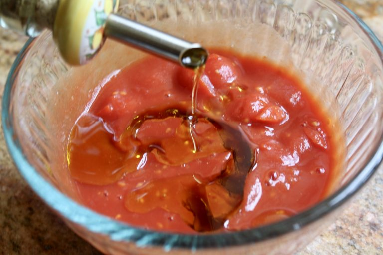

A good pizza sauce has to be light, fresh and delicious
 TOMATOES: You can use fresh tomatoes, however, for guaranteed quality and taste, try to get your hands on “pomodoro pelato S.Marzano dell’Agro Sarnese-Nocerino D.O.P.” Don’t be scared of that long name, you’ll recognize them as San Marzano tomatoes (but they’re the real deal with the DOP). These are simply the “cream of the crop” of the
EXTRA VIRGIN OLIVE OIL:be sure to use a top quality oil (some are mixed with other oils.)